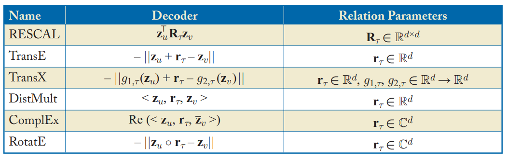
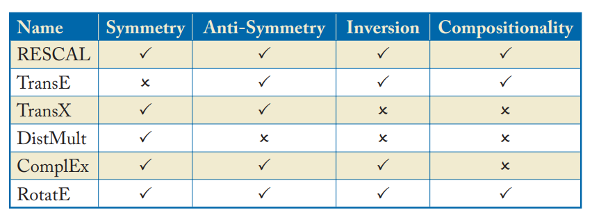

그래프 머신러닝: (4) 다중관계 데이터와 지식 그래프
(GRL) Multi-Relational Data and Knowledge Graphs
Hamilton,W.L. Graph Representation Learning. 2020
앞에서는 저차원 임베딩에 대해 다루었으며, 특히 shallow embedding 방법을 위주로 다루었다. 이 포스트에서는 shallow embedding 방법으로 다중관계(multi-relational)의 그래프에서의 기술에 대해 알아본다.
- 이 포스트에서 다룰 대부분의 방법들은 원래 지식 그래프(knowledge graph)를 위해 디자인되었다.
- 지식 그래프란, \(\mathcal{G}=(\mathcal{V},\mathcal{E},\mathcal{R})\)의 엣지는 튜플 \((u, \tau,v) \in \mathcal{V} \times \mathcal{R} \times \mathcal{V}\)로 정의되며 노드 \(u\)와 노드 \(v\)가 관계 \(\tau\)로 연결되어 있다는 것을 의미한다.
다중관계 데이터의 재구성
이제 재구성(reconstruction) 작업을 다중관계에서 다루게 된다. 즉 여러 종류의 엣지를 다루어야 한다.
우선, 디코더의 인풋으로 노드 임베딩 쌍만을 넣지 않고, 관계의 종류까지 넣는다. \(\text{DEC}: \mathbb{R}^d \times \mathcal{R} \times \mathbb{R}^d \rightarrow \mathbb{R}^+\)
디코더의 아웃풋은 엣지 \((u,\tau, v)\)가 그래프에 존재할 가능도(likelihood)가 된다.
구체적인 예시로, 가장 간단하고 초창기의 다중관계 방법(RESCAL; Nickel et al.,2011)을 살펴보자: \[\text{DEC}(u,\tau,v) = \mathbf{z}_u^{\top}\mathbf{R}_{\tau}\mathbf{z}_v\]
- \(\mathbf{R} \in \mathbb{R}^{d\times d}\)는 \(\tau \in \mathcal{R}\)에 대한 learnable 행렬임.
- 이 디코더를 간단히 하기 위해서 임베딩 행렬 \(Z\)와 관계 행렬 \(R_{\tau}\)를 훈련시키며, 아래와 같은 기본 재구성 손실을 사용한다: \[\mathcal{L} = \sum_{u \in \mathcal{V}}\sum_{v \in \mathcal{V}}\sum_{\tau \in \mathcal{R}} {\|\text{DEC}(u,\tau,v)-\mathcal{A}[u,\tau,v] \|}^2
\\ = \sum_{u \in \mathcal{V}}\sum_{v \in \mathcal{V}}\sum_{\tau \in \mathcal{R}} {\|\mathbf{z}_u^{\top}\mathbf{R}_{\tau}\mathbf{z}_v-\mathcal{A}[u,\tau,v] \|}^2\]
- \(\mathcal{A} \in \mathbb{R}^{|\mathcal{V}|\times|\mathcal{R}|\times|\mathcal{V}|}\)은 다중관계 그래프에 대한 인접 텐서(adjacency tensor)임.
앞서, 서로 다른 디코더와 유사도 측정, 손실 함수에 따라 노드 임베딩 방법이 어떻게 다양하게 나타나는지 확인할 수 있었다. - 디코더는 한 쌍의 노드 임베딩 사이에 점수를 제공한다. - 유사도 함수는 디코딩하려는 노드-노드 유사성의 종류를 정의한다. - 손실 함수는 디코더의 출력과 실측 자료 유사성 측정 간의 불일치를 평가하는 방법을 알려준다.
거의 모든 다중 관계 임베딩 방법은 단순히 인접 텐서를 기반으로 직접 유사성 측정을 정의한다. 즉, 이 장의 모든 방법은 저차원 임베딩에서 직접(다중 관계) 이웃을 재구성하려고 한다고 가정한다. - 이는 다중 관계 그래프에서 고차 이웃 관계를 정의하기 어렵고 대부분의 다중 관계 임베딩 방법이 관계 예측을 위해 특별히 설계되었기 때문이다.
손실 함수
위의 간단한 재구성 손실 함수는 두 가지 단점이 있다.
- 계산 비용이 너무 크다
- 위 방정식의 중첩 합(nested sum)은 \(O(|\mathcal{V}|^2||\mathcal{R})\)의 연산이 필요하다.
- 게다가 많은 다중관계 그래프가 희소(sparse)하기 때문에 \(O(|\mathcal{E}|)\)인 손실 함수를 필요로 한다.
- 이진(binary) 비교에 적합하지 않다
- 저차원 노드 임베딩에서 인접 텐서는 이진 값만을 대부분 포함하지만, 방정식의 평균 제곱 오차는 이진 비교에 적합하지 않다.
Cross-Entropy with Negative Sampling
\[\mathcal{L} = \sum_{(u,\tau,v)\in\mathcal{E}} - \log(\sigma (\text{DEC}(\mathbf{z}_u,\tau,\mathbf{z}_v)) - \gamma \mathbb{E}_{v_n ~ P_{n,u}(v)}[-\log(\sigma (\text{DEC}(\mathbf{z}_u,\tau,\mathbf{z}_{v_n}))]\]
\(\sigma\)는 로지스틱 함수, \(P_{n,u}(\mathcal{V})\)는 (\(u\)에 의존하는) \(V\)에 대한 “negative sampling” 분포 , \(\gamma > 0\)는 하이퍼파라미터
여기서 네거티브 샘플링은 엣지가 없는(엣지 집합에 없는) \((u_n, \tau, v_n) \notin \mathcal{E}\)로 볼 수 있다.
Max-Margin Loss
\[\mathcal{L} = \sum_{(u,\tau,v) \in \mathcal{E}} \sum_{v_n \in P_{n,u}} \max(0, -\text{DEC}(z_u, \tau, z_v) + \text{DEC}(z_u, \tau, z_{u_n}) + \Delta)\]
Max-margin loss에서는 실제 쌍에 대한 디코딩된 점수를 네거티브 샘플과 비교한다. 단, 이것을 이진 분류 작업으로 취급하는 대신 단순히 디코더의 직접 출력과 비교한다.
- “true” 쌍의 점수가 “negative” 쌍보다 크면 손실이 있다.
- \(\Delta\)는 margin이며, 스코어 차이가 모든 예에서 그만큼 크다면 손실은 0이 된다.
다중관계 디코더
위에서는 다중 학습 노드 임베딩을 학습하는 데 가장 많이 사용되는 두 가지 손실 함수를 소개했다. 이러한 손실은 다양한 디코더 함수와 결합될 수 있다.
지금까지는 RESCAL 디코더만 다루었다.

Table 4.1 in Hamilton,Graph Representation Learning. 2020: 다중관계 디코더에 사용되는 디코더들
RESCAL 디코더에서는 trainable matrix \(R_\tau\)를 각 관계와 연결한다. 하지만, 이 방식은 높은 계산 비용 (\(O(d^2)\) 파라미터)가 들어 자주 사용되지 않는다.
최근 디코더는 \(O(d)\)의 파라미터를 사용한다. 아래에서 살펴보자.
Translational Decoders
널리 사용되는 디코더의 클래스 중 하나로 임베딩 공간에서의 관계를 변환(translations)으로 나타내는 방식이다. Bordes et al.(2013)의 TransE 모델이 있다.
- d차원 임베딩을 사용하여 각 관계를 나타낸다.
- 엣지의 likelihood는 관계 임베딩에 따라 헤드 노드를 변환(translate)한 후의 헤드 노드의 임베딩과 꼬리 노드 사이의 거리에 비례한다.
TransE의 한계점은 단순하다는 것이며, 많은 연구에서 이 translate 아이디어의 확장을 제안했다: TransX 모델
Multi-Linear Dot Products
임베딩 변환(translate) 기반의 디코더 대신, 간단한 그래프에서 내적 디코더를 일반화한 다중관계 디코더도 있다. 이 방식은 DistMult(Yang et al.)라고 지칭한다.
- 이 방식은 3개의 벡터에 대한 내적의 일반화로 정의된다.
Complex Decoders
위의 DistMult는 대칭적인 관계만 인코딩할 수 있다. 따라서 복소값(complex-valued) 임베딩으로 DisMult인코더를 증강한 ComplEx가 고안되었다(Trouillon et al.(2016)).
- 식의 Re는 복소수 벡터의 실수 성분을 나타냄
또 다른 방식으로 디코더를 복소 평면에서의 회전으로 정의하는 RotatE (Sun et al., 2009)도 있다.
Representational Abilities
다양한 다중 관계형 디코더를 특성화하는 한 가지 방법은 관계에 대한 다양한 논리적 패턴을 표현(represent)하는 능력이다.

Table 4.2 in Hamilton,Graph Representation Learning. 2020: 다중관계 디코더에 사용되는 디코더의 능력 비교
대칭과 반대칭(anti-symmetry)
- \((u, t, v) \in \mathcal{E} \leftrightarrow (v, t, u) \in \mathcal{E}\)
- \((u, t, v) \in \mathcal{E} \rightarrow (v, t, u) \notin \mathcal{E}\) $
Inversion
- \((u, \tau_1, v) \in \mathcal{E} \leftrightarrow (v, \tau_2, u) \in \mathcal{E}\)
Compositionality
- \((u, \tau_1, y) \in \mathcal{E} \land (y, \tau_2, v) \in \mathcal{E} \rightarrow (u, \tau_3, v) \in \mathcal{E}\)
참고자료
[1] Hamilton, W. L. (2020). Graph Representation Learning. Morgan & Claypool Publishers.